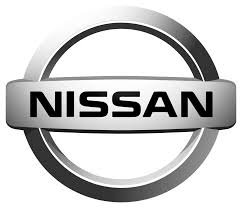
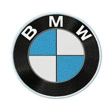
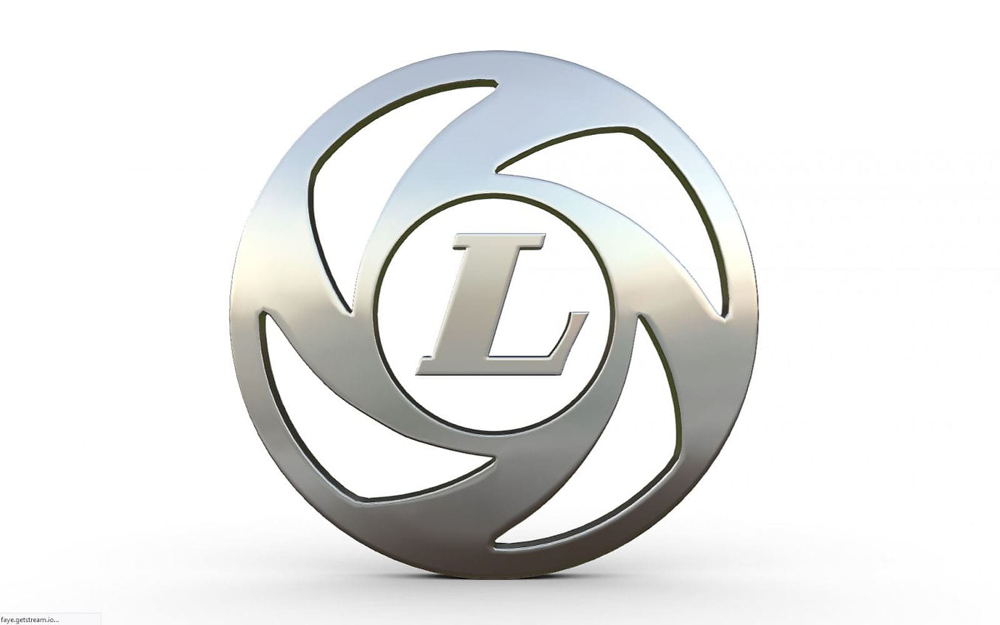
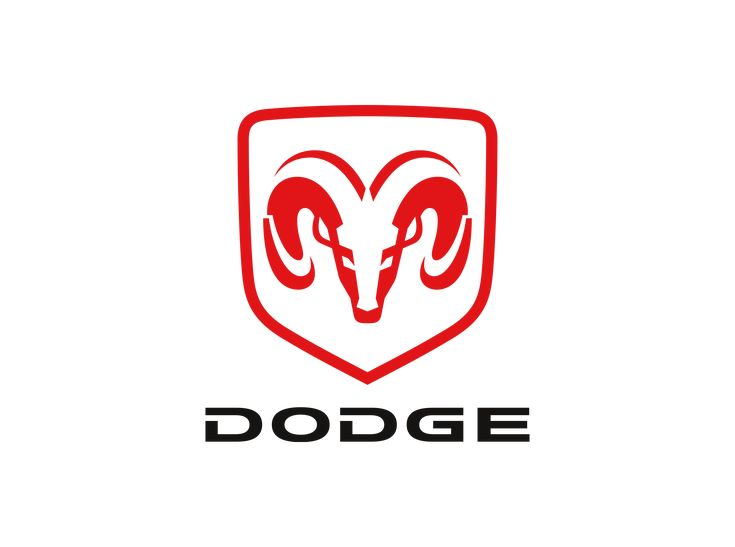

Toyota Motor Corporation

Back to list
Toyota Motor Corporation (Japanese: トヨタ自動車株式会社, Hepburn: Toyota Jidōsha kabushikigaisha, English: /tɔɪˈjoʊtə/, commonly known as simply Toyota) is a Japanese multinational automotive manufacturer headquartered in Toyota City, Aichi, Japan. It was founded by Kiichiro Toyoda and incorporated on August 28, 1937. Toyota is the largest automobile manufacturer in the world, producing about 10 million vehicles per year. The company was originally founded as a spinoff of Toyota Industries, a machine maker started by Sakichi Toyoda, Kiichiro's father. Both companies are now part of the Toyota Group, one of the largest conglomerates in the world. While still a department of Toyota Industries, the company developed its first product, the Type A engine, in 1934 and its first passenger car in 1936, the Toyota AA.
Nissan Motor Co Ltd

Back to list
Nissan Motor Co Ltd (Nissan) is an automobile manufacturer. It carries out the design, production and sale of automobile products. The company’s product portfolio includes sedans, compact cars, SUVs, sports cars, minivans, kei cars, light commercial vehicles, and related parts. The company offers automobiles under the brand names of Nissan, and Infiniti among others. Nissan also provides various auto financing services including motor insurance, payment protection insurance and extended warranty services. The company markets its products and services through a network of retail outlets in Asia Pacific, Europe, the Middle East, Africa and the Americas. Nissan is headquartered in Yokohama-shi, Kanagawa-ku, Japan.
Bayerische Motoren Werke AG (BMW)

Back to list
Bayerische Motoren Werke AG, commonly abbreviated to BMW is a German multinational manufacturer of luxury vehicles and motorcycles headquartered in Munich, Bavaria, Germany. The company was founded in 1916 as a manufacturer of aircraft engines, which it produced from 1917 to 1918 and again from 1933 to 1945 creating engines for aircraft that were used in the Second World War. Automobiles are marketed under the brands BMW, Mini and Rolls-Royce, and motorcycles are marketed under the brand BMW Motorrad. In 2023, BMW was the world's ninth-largest producer of motor vehicles, with 2,555,341 vehicles produced and in 2022 the 7th largest by revenue. In 2023, the company was ranked 46th in the Forbes Global 2000. The company has significant motor-sport history, especially in touring cars, sports cars, and the Isle of Man TT. BMW is headquartered in Munich and produces motor vehicles in Germany, Brazil, China, India, Mexico, the Netherlands (ceased in 2023), South Africa, the United Kingdom, and the United States. The Quandt family is a long-term shareholder of the company, following investments by the brothers Herbert and Harald Quandt in 1959 that saved BMW from bankruptcy, with the remaining shares owned by the public.
Leyland Motors Limited

Back to list
Leyland Motors Limited (later known as the Leyland Motor Corporation) was an English vehicle manufacturer of lorries, buses and trolleybuses. The company diversified into car manufacturing with its acquisitions of Triumph and Rover in 1960 and 1967, respectively. It gave its name to the British Leyland Motor Corporation, formed when it merged with British Motor Holdings[a] in 1968, to become British Leyland after being nationalised. British Leyland later changed its name to simply BL, then in 1986 to Rover Group. After the various vehicle manufacturing businesses of BL and its successors went defunct or were divested, the following marques survived: Jaguar and Land Rover, now built by Jaguar Land Rover owned by TATA Motors; MG, now built by MG Motor, and Mini, now built by BMW. The truck building operation survived largely intact as Leyland Trucks, a subsidiary of Paccar.
Automobili Lamborghini S.p.A.

Back to list
Automobili Lamborghini S.p.A. is an Italian manufacturer of luxury sports cars and SUVs based in Sant'Agata Bolognese. The company is owned by the Volkswagen Group through its subsidiary Audi. Ferruccio Lamborghini (1916–1993), an Italian manufacturing magnate, founded Automobili Ferruccio Lamborghini S.p.A. in 1963 to compete with Ferrari. The company was noted for using a rear mid-engine, rear-wheel drive layout. Lamborghini grew rapidly during its first decade, but sales plunged in the wake of the 1973 worldwide financial downturn and the oil crisis. The firm's ownership changed three times after 1973, including a bankruptcy in 1978. American Chrysler Corporation took control of Lamborghini in 1987 and sold it to Malaysian investment group Mycom Setdco and Indonesian group V'Power Corporation in 1994. In 1998, Mycom Setdco and V'Power sold Lamborghini to the Volkswagen Group where it was placed under the control of the group's Audi division.
Dodge

Back to list
Dodge is an American brand of automobiles and a division of Stellantis North America, based in Auburn Hills, Michigan. Dodge vehicles have historically included performance cars, and for much of its existence Dodge was Chrysler's mid-priced brand above Plymouth.
Founded as the Dodge Brothers Company machine shop by brothers Horace Elgin Dodge and John Francis Dodge in the early 1900s,Dodge was originally a supplier of parts and assemblies to Detroit-based automakers like Ford. They began building complete automobiles under the "Dodge Brothers" brand in 1914, predating the founding of the Chrysler Corporation. The factory located in Hamtramck, Michigan was the Dodge main factory from 1910 until it closed in January 1980. John Dodge died from the Spanish flu in January 1920, having lungs weakened by tuberculosis 20 years earlier.[3] Horace died in December of the same year, perhaps weakened by the Spanish flu, but the cause of death was cirrhosis of the liver. Their company was sold by their families to Dillon, Read & Co. in 1925 before being sold to Chrysler in 1928.